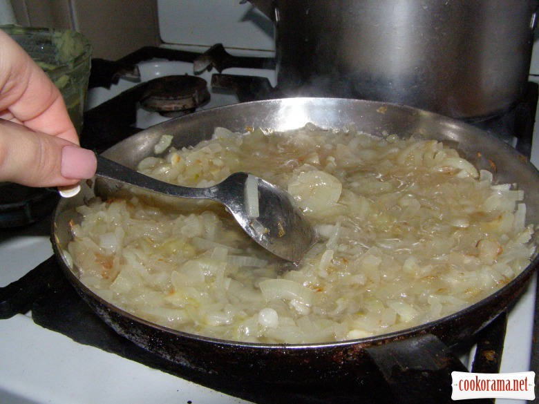

Цибулевий суп
Інгредієнти: бульйон курячий 1 л цибуля ріпчаста 1 кг вино біле (сухе) 200 г. сир твердий 250 г. хліб білий сіль
Кулінарний рецепт цибулевого суп.
Насамперед ріжемо цибулю чверть кільцями.
У нас виходить ось така купа цибульки.
Цибулю потрібно обсмажити до прозоро-золотистого кольору, дуже важливо не пересмажити цибулю! Золотистий колір з'являється за рахунок карамелізації цукру, яка знаходиться в цибулі.
Тепер додаємо 200г. білого сухого (можна напів-сухого) вина, ополоник бульйону і трохи упарюємо.

Перекладаємо цибулю з вином в каструлю і доливаємо бульйон. Ставимо на вогонь, солимо, нехай вариться поки ми посмажимо грінки.
Нарізаємо білий хліб товстими великими скибками і смажимо грінки.
Тремо на тертці сир і збираємо нашу страву.
Відправляємо на 15 хвилин у розігріту духовку. За цей час грінки вберуть у себе бульйон, а сир розплавиться.